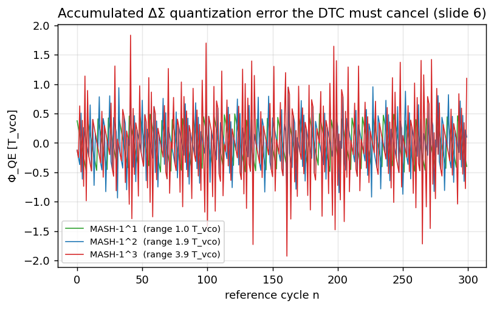
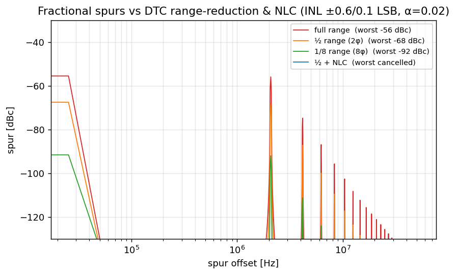

Fractional Spurs — the deck's central quantitative result
A fractional-N PLL deliberately wanders its divide ratio every reference cycle; the residue of that wander is a structured, periodic error. When the DTC that cancels it is even slightly nonlinear, that periodicity collapses into discrete tones (spurs) in the output spectrum — and because they are coherent, a single −40 dBc spur can carry more jitter than the entire 87.6 fs budget. This page builds the spur story from accumulator residue → INL Fourier theory → noise folding → jitter budget → the three cures that take the measured spurs to −70…−85 dBc.
1. Where the quantization error comes from
Intuition: a fractional ratio cannot be made from integer cycles
The multi-modulus divider (MMD) can only divide by an integer. To realize an average ratio \(N=64.62\) derived the ΔΣ modulator (DSM) dithers the instantaneous divide value between integers (…64, 65, 64, 65, 66…) so the long-term average equals 64.62. Each cycle that the divider is "wrong by an integer", the feedback edge CKFB lands early or late relative to CKREF. The running sum of those integer errors is the accumulated quantization error \(\Phi_{\rm QE}[n]\) — measured in VCO periods, because each integer divide error displaces the feedback edge by one \(T_{\rm vco}\).
Worked example — follow a 1st-order accumulator by hand: why dithering averages to a fraction
Take a tiny 4-bit accumulator (\(2^4=16\)) with \(\text{FCW}=10\), i.e. \(\alpha=10/16=0.625\). Each reference cycle does \(\text{acc}\leftarrow(\text{acc}+10)\bmod 16\), and a carry fires (divide = \(N{+}1\) instead of \(N\)) whenever the running sum reaches 16:
| cycle \(n\) | acc + FCW | carry → divide | new acc \((=\Phi_{\rm QE}\cdot16)\) |
|---|---|---|---|
| 1 | 0+10=10 | 0 → \(N\) | 10 |
| 2 | 10+10=20 | 1 → \(N{+}1\) | 4 |
| 3 | 4+10=14 | 0 → \(N\) | 14 |
| 4 | 14+10=24 | 1 → \(N{+}1\) | 8 |
| 5 | 8+10=18 | 1 → \(N{+}1\) | 2 |
| 6 | 2+10=12 | 0 → \(N\) | 12 |
| 7 | 12+10=22 | 1 → \(N{+}1\) | 6 |
| 8 | 6+10=16 | 1 → \(N{+}1\) | 0 |
Carries over the 8-cycle period: \(0,1,0,1,1,0,1,1\) — exactly 5 carries in 8 cycles, so the divide is \(N{+}1\) five-eighths of the time and \(N\) the rest: the average divide is \(N+\tfrac58 = N+0.625 = N+\alpha\). That is the whole trick — the overflow rate equals \(\alpha\). derived textbook (accumulator = 1st-order ΔΣ)
The real design is identical with \(L=24,\ \text{FCW}=10{,}324{,}441\) (\(\alpha=0.6154\)): the carry now averages 0.6154, so the MMD averages \(64.6154\). The leftover residue (the last column \(\div 2^L\), in \(T_{\rm vco}\)) is precisely the \(\Phi_{\rm QE}[n]\) the DTC cancels — and for a 1st-order accumulator it sweeps the full \([0,1)\,T_{\rm vco}\) sawtooth, the "1 \(T_{\rm vco}\)" MASH-1 range below. Watch it live in the accumulator widget →. model
The DTC's job is to delay CKREF by exactly \(\Phi_{\rm QE}[n]\) each cycle so the phase detector sees ≈0 error — the fractional PLL then behaves like an integer-N PLL :
Math: MASH order sets the QE range
A MASH-\(1^m\) modulator (cascade of \(m\) first-order stages) produces a quantization error whose instantaneous phase residue \(\Phi_e\) is bounded by :
| Modulator | \(\Phi_e\) range | QE range (DTC must cover) | NTF shaping |
|---|---|---|---|
| MASH-1 | \([-T_{\rm vco}/2,\,+T_{\rm vco}/2]\) | \(1\,T_{\rm vco}\) | \((1-z^{-1})^1\) |
| MASH-1-1 | \([-T_{\rm vco},\,+T_{\rm vco}]\) | \(2\,T_{\rm vco}\) | \((1-z^{-1})^2\) |
| MASH-1-1-1 | \([-2T_{\rm vco},\,+2T_{\rm vco}]\) | \(4\,T_{\rm vco}\) | \((1-z^{-1})^3\) |
— the QE range is \(1/2/4\,T_{\rm vco}\) for MASH-1 / 1-1 / 1-1-1.
Worked example — which integers each MASH order emits, and why that sets the DTC range
For orders > 1 the DSM doesn't just toggle \(N/N{+}1\): the MASH combiner sums several differenced carries, so the instantaneous divide spans more integers. With 1st-order carries \(c_i\in\{0,1\}\) and combiner \(y=c_1+(1-z^{-1})c_2+(1-z^{-1})^2c_3+\dots\):
| MASH | combiner | divide offsets \(y[n]\) | residue range |
|---|---|---|---|
| MASH-1 | \(c_1\) | \(\{0,1\}\) | \(1\,T_{\rm vco}\) |
| MASH-1-1 | \(c_1+\Delta c_2\) | \(\{-1,0,1,2\}\) | \(2\,T_{\rm vco}\) |
| MASH-1-1-1 | \(c_1+\Delta c_2+\Delta^2 c_3\) | \(\{-3,\dots,4\}\) | \(4\,T_{\rm vco}\) |
So for the proposed 2nd-order (MASH-1-1) design the divide ratio is not just 64/65 — it ranges over \(\{63,64,65,66\}\), and the accumulated residue the DTC must absorb spans 2 \(T_{\rm vco}\) peak-to-peak . Each extra order doubles that span (and the DTC range) while steepening the noise shaping — the trade quantified just below. derived
This is the trade in one line: each extra DSM stage steepens the noise shaping by one factor of \((1-z^{-1})\) (pushing quantization noise to higher frequency where the loop filters it), but doubles the DTC range, which — by the slide-33 scaling — costs DTC quantization noise (\(\propto t_{\rm res}^2\)), thermal noise (\(\propto\) DR), power (\(\propto\) DR\(^2\)) and linearity. The proposed design therefore uses a modified low-order DSM plus range-reduction tricks rather than brute-forcing a high order .

mash_qe() in models/extras.py.Interactive: watch the residue, its range, and its PSD
Change the fractional setting and the DSM order; the widget runs the same MASH simulator as the Python model (simMASH in assets/app/pll_ext.js, mirroring extras.py:mash_qe). The top panel is the time-domain residue \(\Phi_{\rm QE}[n]\) and its peak-to-peak range in \(T_{\rm vco}\); the bottom panel is the PSD of the divide-ratio dither (the modulus sequence), which is what the loop actually shapes model. The blue "shaped floor" is a smoothed trend over the raw periodogram.
2. From DTC INL to fractional-spur Fourier theory
Intuition: a perfect DTC has no spurs; a bent one does
Suppose the residue you must cancel is the simplest periodic case — a sawtooth \(\operatorname{frac}(n\alpha)\) with \(\alpha\) the fractional part of the channel. An ideal linear DTC reproduces it perfectly and the phase error is zero: no spur. But a real DTC has integral nonlinearity (INL) — its delay-vs-code curve is slightly bent. Feeding a sawtooth through a bent curve produces a periodic error, and a periodic error is, by Fourier, a sum of discrete tones. Those tones land at multiples of the sawtooth's fundamental, \(\alpha f_{\rm ref}\) — the fractional spurs.
Math: the INL polynomial and the spur it makes
Model the static INL as a low-order polynomial in the normalized code \(u\in[-1,1]\) , and convert the timing error to an output phase via the carrier :
$$u[n] = 2\,\operatorname{frac}(n\alpha)-1,\qquad \delta t[n] = t_{\rm res}\big(g_2\,u^2 + g_3\,u^3\big)\quad\text{\small (INL model, extras.py)}$$ $$\phi[n] = 2\pi f_{\rm out}\,\delta t[n]\qquad\Longrightarrow\qquad \boxed{\ \text{spur level (dBc)} = 20\log_{10}\!\frac{\phi_{\rm pk}}{2}\ }$$The first equation is the bent DTC; the second turns a residual time error into a residual phase error at the 6.72 GHz output; the boxed result is the single-tone level for a peak phase deviation \(\phi_{\rm pk}\) derived (matches spur_spectrum). The \(g_2\) (parabolic) term dominates because it is the natural shape of cap-array + comparator INL .
Show the algebra: why a periodic δt becomes discrete tones at \(k\,\alpha f_{\rm ref}\)
The sawtooth \(\operatorname{frac}(n\alpha)\) has period \(1/\alpha\) reference cycles (for rational \(\alpha\)); any memoryless function of it, including \(\delta t[n]=t_{\rm res}(g_2u^2+g_3u^3)\), is therefore also periodic with the same period. A periodic discrete sequence expands as a Fourier series:
$$\delta t[n] = \sum_{k} c_k\, e^{\,j 2\pi k \alpha n},\qquad \text{tone } k \text{ at offset frequency } f_k = k\,\alpha\,f_{\rm ref}.$$For small \(\phi\), the narrowband-FM/PM approximation gives a single sideband of relative amplitude \(\phi_{\rm pk,k}/2\) for each Fourier component \(k\), hence \(\text{dBc}_k = 20\log_{10}(\phi_{\rm pk,k}/2)\). The quadratic term \(g_2u^2\) folds the fundamental into a strong 2nd-harmonic spur at \(2\alpha f_{\rm ref}\); the cubic \(g_3u^3\) feeds the 1st and 3rd. In code this is just an FFT of \(\phi[n]=2\pi f_{\rm out}\delta t[n]\) (Hann-windowed, single-sided, normalized), then read off the tallest bin derived:
u = (2*((n*alpha) % 1.0) - 1) * redux # sawtooth residue, range-scaled
inl = g2*u**2 + g3*u**3 # static DTC INL (slide 17)
phi = 2*np.pi*p.f_out * (inl*t_res) # output phase error (boxed eqn)
X = np.fft.rfft(phi*np.hanning(N)) # tones at k*alpha*f_ref
dbc = 20*np.log10( (2*np.abs(X)/N/0.5)/2 ) # 20log10(phi_pk/2) per bin(from spur_spectrum in models/extras.py; the same routine multiplies each bin by the loop's \(|H_{\rm ref}(f)|/N\) so spurs inside the loop bandwidth are passed and out-of-band ones are filtered.)
With INL ±0.6/0.1 LSB and fractional offset \(\alpha=0.02\), the worst spur is about −56 dBc at full DTC range model (extras.py) — far above the −70…−85 dBc the silicon actually achieves, which is precisely why the range-reduction and NLC of §5 exist
- Peak timing error of the bent curve at the sawtooth peak \(u{=}{+}1\): \(\delta t_{\rm pk}=t_{\rm res}(g_2{+}g_3)=400\,\text{fs}\times0.7=280\) fs (this is the static excursion; the spur lives in its periodic Fourier content, not this peak directly).
- Run the FFT model (\(\phi[n]=2\pi f_{\rm out}\,\delta t[n]\), Hann-windowed, single-sided, loop-shaped) and read the tallest in-band bin: the dominant tone is the 2nd-harmonic of the quadratic term at \(2\alpha f_{\rm ref}=2(0.02)(104\,\text{MHz})=4.16\) MHz, at \(-55.9\) dBc model (extras.py).
- Invert the boxed formula to recover the residual peak phase: \(\phi_{\rm pk}=2\cdot10^{L/20}=2\cdot10^{-55.9/20}=3.20\times10^{-3}\) rad \((=0.183^\circ)\), i.e. a residual timing jitter on the tone of \(\phi_{\rm pk}/(2\pi f_{\rm out})=76\) fs peak derived.
3. Noise folding — why cancellation eventually saturates
Intuition: squaring shaped noise un-shapes it
The DSM works by pushing its quantization noise to high frequency, where the loop filter removes it — that is the whole point of noise shaping. But a nonlinearity does not respect that shaping. A square-law term \(y=x+a_2x^2\) multiplies the high-frequency noise by itself, and a product in time is a convolution in frequency. Convolving a high-pass spectrum with itself drags energy back down to DC / low frequency — straight into the loop bandwidth, where it raises the in-band floor. This is "noise folding," and it is the reason you cannot cancel spurs to arbitrary depth: past a point, the residual is folded broadband noise, not a tone you can null.
Math: autoconvolution of the shaped QN spectrum
For a memoryless second-order nonlinearity acting on the shaped quantization noise \(x\) (PSD \(S_x\)) textbook (Wiener/Volterra, memoryless squarer):
$$y = x + a_2\,x^2 \quad\Longrightarrow\quad S_{\rm fold}(f)\ \approx\ a_2^2\,\big(S_x \star S_x\big)(f) \qquad\text{\small derived}$$where \(\star\) is convolution. The shaped DSM noise is \(S_x(f)=S_{Q\rm dsm}(f)=\tfrac{1}{12 f_{\rm ref}}\,[2\sin(\pi f/f_{\rm ref})]^{2m}\) textbook (Riley JSSC'93), which is small near DC and large near \(f_{\rm ref}/2\). Its self-convolution has a non-zero value at \(f=0\) — a flat in-band floor that did not exist before the nonlinearity. The folded floor scales as \(a_2^2\), so halving the INL gives ~6 dB; but it never reaches zero with finite INL.
4. A spur in the jitter budget — how many femtoseconds is −40 dBc?
Math: a coherent tone adds a fixed variance
A single spur at level \(L\) (dBc) contributes a deterministic, double-sideband phase variance derived (model):
$$\sigma_{\phi,\rm spur}^2 \;=\; 2\cdot 10^{L/10}\quad\text{[rad}^2\text{, DSB]},\qquad \sigma_{t,\rm spur}=\frac{\sigma_{\phi,\rm spur}}{2\pi f_{\rm out}}.$$The factor 2 counts both sidebands; equivalently \(\phi_{\rm pk}=2\cdot10^{L/20}\) and \(\sigma^2=\phi_{\rm pk}^2/2\) — consistent with the boxed spur-level formula of §2.
| Spur \(L\) | \(\sigma_{t,\rm spur}\) | total with 87.6 fs | budget cost |
|---|---|---|---|
| -56 dBc (full range) | 53.1 fs | \(\sqrt{87.6^2{+}53.1^2}=102.4\) fs | +14.8 fs - blows the budget |
| -70 dBc (measured edge) | 10.6 fs | \(\sqrt{87.6^2{+}10.6^2}=88.2\) fs | +0.6 fs - visible |
| -85 dBc (measured deep) | 1.9 fs | \(\sqrt{87.6^2{+}1.9^2}=87.6\) fs | +0.02 fs - negligible |
Threshold: to keep a spur under 5% of the budget (\(0.05\times87.6=4.4\) fs) you need
$$L < 10\log_{10}\!\frac{(4.4\times10^{-15}\cdot2\pi f_{\rm out})^2}{2} = -77.7\ \text{dBc}.$$ Sanity check: the measured -70...-85 dBc band straddles this -78 dBc line - the deep channels are negligible, the worst (-70 dBc) adds a still-tolerable 0.6 fs, and the un-cured -56 dBc full-range spur would have made the PLL miss spec by itself. derived| Spur level | \(\sigma_{\phi}\) [rad] | \(\sigma_t\) @6.72 GHz | vs 87.6 fs budget |
|---|---|---|---|
| −40 dBc | 1.41e−2 | 335 fs | 3.8× over — fatal |
| −56 dBc (full range) | 2.24e−3 | 53 fs | dominant — must reduce |
| −70 dBc (measured best edge) | 4.47e−4 | 11 fs | small but visible |
| −85 dBc (measured deep) | 7.96e−5 | 1.9 fs | negligible |
All rows: \(\sigma_t=\sqrt{2\cdot10^{L/10}}/(2\pi\cdot6.72\,\text{GHz})\) derived; measured edge values from .
5. Killing spurs — range reduction, NLC, and VCO-duty cal
Three independent levers, attacking the spur at three points of the chain. They compound: range reduction makes the DTC operate over a small, near-linear segment; NLC pre-distorts away whatever curvature remains; duty-cycle cal removes a separate alternating-cycle spur that the first two cannot touch.
5.1 Range reduction — use less of the bent curve
INL is the integral of the small DNL bumps, so its excursion grows with how much of the transfer curve you sweep. The proposed ½-range (two VCO phases, SEL_CKFB) and survey 1/8-range (eight RO phases) techniques restrict the DTC to a small, locally-linear segment by handing the coarse \(T_{\rm vco}\) (or \(T_{\rm vco}/8\)) steps to a phase mux. In the model this is the redux factor scaling \(u\); the spur drops fast model:
Because the dominant term is quadratic (\(g_2u^2\)), halving the range cuts the spur amplitude ~4× (≈12 dB) — the model's −56 → −68 → −92 dBc as range goes full → ½ → 1/8
The dominant spur comes from the quadratic INL \(g_2u^2\). Range reduction scales the sawtooth \(u\to r\,u\), so the quadratic content scales as \(r^2\) and the spur amplitude in dB by \(20\log_{10}r^2=40\log_{10}r\). Each halving (\(r:1\to\tfrac12\)) is therefore Run full → ½ = -12.0 dB (one halving); ½ → 1/8 = -24.0 dB over two halvings = -12.0 dB each model. The model reproduces the \(40\log_{10}r\) law to 0.02 dB. Sanity check: from full range, 1/8 is three halvings, so predicted \(3\times(-12.04)=-36.1\) dB; measured \(-91.96-(-55.92)=-36.0\) dB. The slide-quoted endpoints (-68 dBc at ½ , -92 dBc at 1/8 ) sit right on this line. derivedWorked example - prove the "+12 dB per range halving" from the model output
spur_spectrum at the three ranges (full \(r{=}1\), ½ \(r{=}0.5\), 1/8 \(r{=}0.125\)) and read the worst tone model (extras.py):
5.2 Nonlinearity correction (NLC) — pre-distort the code
NLC adds an inverse-INL polynomial to the DTC code so the cascade is linear :
$$D_{\rm DCW}=g_1 D_{\rm AQ}+g_2 D_{\rm AQ}^2+g_3 D_{\rm AQ}^3,\qquad D_{\rm AQ}=\text{accumulated DSM phase}\quad\text{\small slide p31}$$Three parallel LMS loops adapt \(g_1{=}K_{\rm DTC},g_2,g_3\). In the model, ½-range + NLC drives the worst tone below the −135 dBc plot floor ("cancelled") model. One subtlety worth flagging: the naive monomial regressors \([D,D^2,D^3]\) are correlated (ill-conditioned \(R\), wide eigenvalue spread → slow/coupled convergence); using Legendre \(P_1,P_2,P_3\), which are orthogonal on \([-1,1]\), decouples the loops and converges cleaner textbook (orthogonal polynomials / LMS eigenvalue spread) — see the calibrations page and legendre_vs_monomial().
5.3 VCO duty-cycle calibration — a separate spur source
The ½-range trick assumes the two VCO phases are exactly \(T_{\rm vco}/2\) apart. If the VCO duty cycle ≠ 50%, \(\Delta t_{\rm err}=\Delta t-T_{\rm vco}/2\neq0\) injects a SEL_CKFB-correlated (alternating-cycle) error — a spur the static NLC cannot see, because it is keyed to the phase-select sequence, not to the code. The sign-LMS vco_dcc loop correlates \(e[k]\) with SEL_CKFB to null it . In the spur model, a 20 ps VCO duty error raises an alternating-cycle spur (at \(f_{\rm ref}/2\)) to ≈−64 dBc with calibration off, and it disappears with calibration on model (extras.py) .

spur_spectrum() in models/extras.py; range-reduction per , NLC per .Interactive: drive the spur down yourself
Sweep the fractional offset \(\alpha\), the INL coefficients \(g_2,g_3\), the range-reduction factor, the NLC toggle, and the VCO duty error / duty-cal toggle. The widget runs spurSpectrum (the JS mirror of extras.py:spur_spectrum) and reports the worst-spur level live model. Try to reach the measured −70…−85 dBc band.
Self-check
Show answer
Show answer
Show answer
models/extras.py and the §4 worked example; measured −70…−85 dBc is ; the 1/2/4 \(T_{\rm vco}\) ranges are .